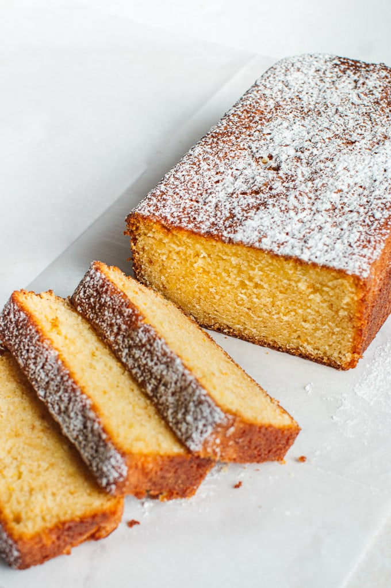

|  |
- 2 ½ cups (350g) all-purpose flour, sifted
- 2 ½ teaspoons baking powder
- 4 large eggs
- 1 ½ cups (300g) granulated sugar
- 1 cup (240 ml) canola or vegetable oil
- 1 ¼ cups (300 ml) freshly squeezed orange juice
- Orange zest from 3-4 oranges
- 1 teaspoon pure vanilla extract
|